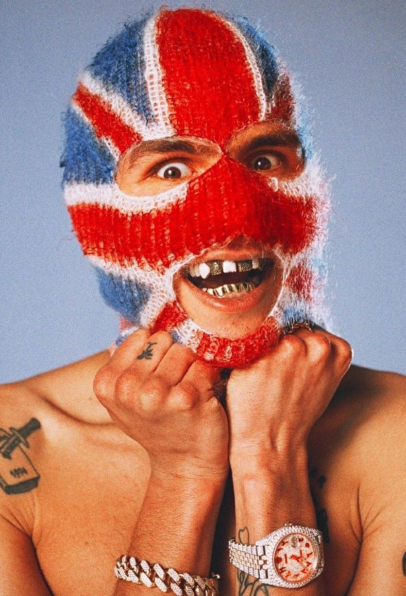
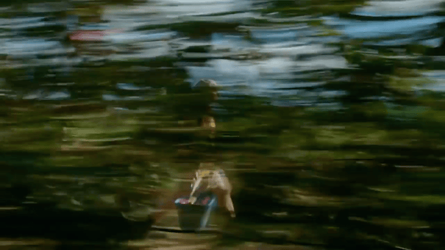
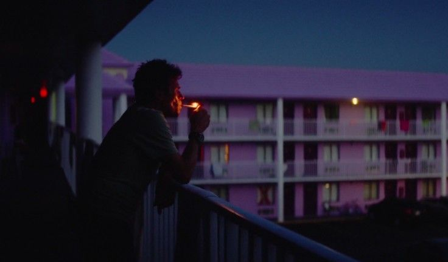
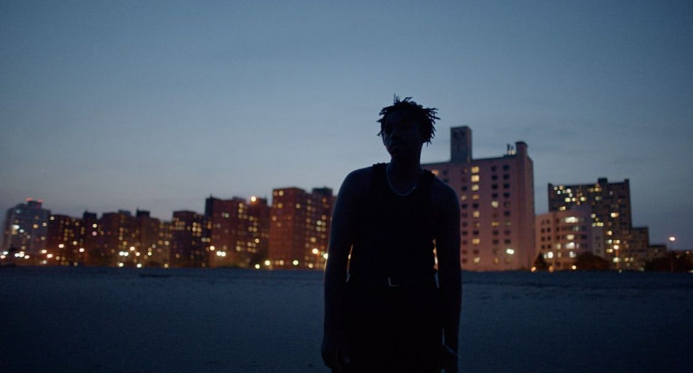

Right up close
A face, a look, a chain, a sleeve. These quick details give the verses a personal feel and let the edit breathe between wider shots.
Camera: Tight framing · slow move in · stay with the eyes.
One night, moving from the last of the evening into the city after dark. We follow you through a few places in London, from a quiet walk outside to a more contained performance inside. You stay at the centre of it; the song sets the pace.
The story is simple: you start alone, moving through the city as the day ends. As the track picks up, the camera gets closer and the cuts get quicker. A car, a Lime bike, or a change of location can carry us into the next scene. The final hook brings us back to you, now fully in command of the frame. Friends can appear in the distance if useful, but we don’t need a group.
Performance stays direct and personal. Look into the lens, then let a few quieter moments play without performing.
We’ll mix steady portraits with close handheld shots, a few quick pans, and occasional motion blur.
City of London or Canary Wharf outside; a rented warehouse or small space inside. We’ll choose the exact spots together.
We open with space and stillness, follow you through the city, then move into the warehouse as the track builds. The last section brings the energy back to a strong, simple portrait. These timecodes are a guide; we’ll line them up with the actual song sections.
A few frames to show how the video might feel. They’re there to guide the framing, camera movement, and pace—not to copy shot for shot.

A face, a look, a chain, a sleeve. These quick details give the verses a personal feel and let the edit breathe between wider shots.

We catch you through the window. Street reflections move across the glass while you sit still, creating a pause between locations.

We first see you with room around you. A wide, quiet view gives the video somewhere to start before we move closer.

As the song picks up, follow you along the walkway. One quick blurred pass can bridge the walk into the next scene.

The space opens up for the hook. You perform alone; a few distant silhouettes are optional. Use the fog and strobe for this setup, then keep the other scenes simpler.

A mostly cool portrait with one warmer edge. Keep this as a brief look, rather than carrying it through every setup.

A single person against a large, simple background. This gives the indoor performance a different scale from the street scenes.
Before we see your face, catch a few quick details as you arrive: shoes on the pavement, your hand on the car door, or a close-up of your outfit. Cut to you as the vocal starts.
Begin tight on your face, then ease back to show where you are. Keep the first look quiet and direct; this is our introduction to you and the city.
Opening portraitSet the sceneFilm the whole verse in one medium-wide take. You stay on your own, performing straight to camera while the city sits quietly behind you. This gives the edit a clear backbone.
Full takeSolo performancePick up the next part as you walk along a walkway or past the shutters. Start with you in the distance and meet you halfway through the shot. Friends can stay out of frame.
Follow shotSolo performancePick up close shots between lines: your hands, face, clothes, shoes, or the car. Use these to break up the full take and underline a lyric or gesture.
Close-upsCutawaysMove into the warehouse for the first hook. Give you the whole space and let the performance get bigger. A slow move around you is enough; friends can be silhouettes if they’re available.
HookSolo leadRepeat the hook from a lower angle, closer to you. Use this when the beat or delivery hits hardest, so the cut feels like a step up from the wide take.
Hook coverageLow angleEnd on a turn toward the car or Lime bike. Let the movement fill the frame, then match it to the next location. Shoot the car parked for the window close-up.
TransitionCar / bike optionalInside the smaller space, slow things down for a moment. Start on your profile; turn to the lens as the line changes. It gives the song a pause before the build back up.
New sceneProfile to cameraCut overhead to see you alone in the space, then look up into camera. It’s a quick visual break before the final run of the track.
OverheadSolo frameFilm one turn, step, or move toward camera at 60 fps. Save it for a lyric or beat where the track briefly opens up.
Slow motionSingle actionReturn to the strongest location and repeat the hook. This time, cut between the wide take and close handheld passes, building on the scenes we’ve already seen.
Final hookReturnA run of short portraits: look to camera, turn away, look back. Keep each take simple and let the edit pick the moments that match the final bars.
Portrait montageFinal barsHold on your face for the last line. Give the camera a beat, then cut to black on the track’s final hit.
Final imageHoldA night that starts quietly and gathers pace, with a short pause before the last hook.
Familiar streets.
Your night out.
Start outside while there’s still a little daylight, then move into the city after dark. The warehouse gives us a change of pace without needing a complicated story or a big cast. You stay at the centre of every scene.
EUPHORIC
Quicker cuts and bigger movement when the hook lands.
NOSTALGIC
Grain, held moments, places that feel familiar.
EDGY
Close portraits and sudden changes in pace.
The camera starts back, follows you through the city, then gets closer as the song builds. We pull back for the quieter section and close in again for the last hook.
Keep most shots clear and natural. Save grain and motion blur for a few transitions, so those moments stand out.
Hold longer during the verses. Let the hooks move faster, then give the final look room to land.
You are the only required performer. Friends are optional; we can shoot the full video with you alone.
Clothes should sit within the blue and red palette. A stylist can join if you’d like one.
City of London or Canary Wharf outside, plus a rented warehouse or small indoor space. We’ll choose 3–5 practical locations together, keeping travel time in mind.
Your car, which you’ll drive, or a Lime bike. Either can be left out if it doesn’t suit the final plan.
Sony FX3 camera kit, camera support, strobe, spotlight, fog machine, overhead frame, and the grip gear needed for the locations.
Close portraits, a quiet city silhouette, movement through the street, and one larger warehouse performance.
Start around sunset and finish after dark. With three hours, we’ll keep to two nearby locations. Six hours gives us room for more setups and, if the travel is short, 3–5 locations.
20 minutes to set up; 45 minutes outside for the opening and verse; 30 minutes for the walk and close-ups; 75 minutes inside for the hook and full-song takes; 10 minutes to wrap. Keep the outdoor and indoor spots close.
30 minutes to set up; 60 minutes outside around sunset; 45 minutes for the walk, portraits, and car or bike shots; 2½ hours for night scenes; 50 minutes inside for performance and details; 25 minutes for pickups and wrap.
Dawn and sunset are separate shoots. We can plan a dawn call time on another day if you want morning footage as well.
4K capture. Use 24 fps for the main performance and 60 fps for selected slow-motion inserts. Set shutter near 1/50 at 24 fps and 1/125 at 60 fps.
Record one uninterrupted full-song master, then repeat the key sections in wide, medium, and close framings. Get clean starts and finishes on each take.
Use reliable face/eye autofocus for moving performance, check focus before each take, and keep white balance consistent across setups. Avoid changing exposure mid-take.